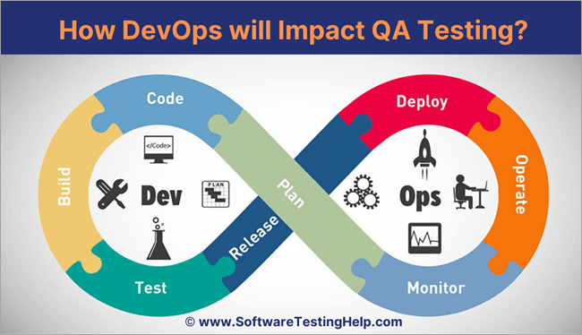

Build Full Devops Stacks¶

Getting Started¶
- Ideally, I want to build Devlops Stacks Wear I can improve my deployment for production. Aside from this benefit, I want certain testing applied during CI/CD in which can narrow down the issue.
- There are couple things I commited to in order to produce the devops stacks. First of all, apps are deployed over container.
- I also utilize gits as main drive for gitops operation.
CICD¶
CI - Deploy the build on the pipeline. Tasks are often related to unit testing and container building.
CD - During CD stage, I wil utilize terraform to practice IaC (Infrastructure as code). _ Rarely, I use vagrant with terraform to test out the deployment and make my code viewable to others.